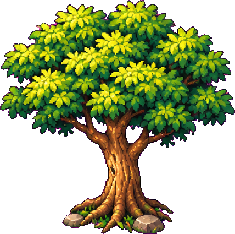
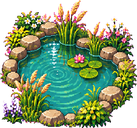

Chạm vào cây đang lớn để tưới. Mỗi cây tưới được một lần.
Kho trống. Thu hoạch cây chín để đưa nông sản vào kho.


Chạm vào cây đang lớn để tưới. Mỗi cây tưới được một lần.
Kho trống. Thu hoạch cây chín để đưa nông sản vào kho.
Trồng cây, tưới nước, thu hoạch rồi bán lấy xu để mở rộng ruộng.